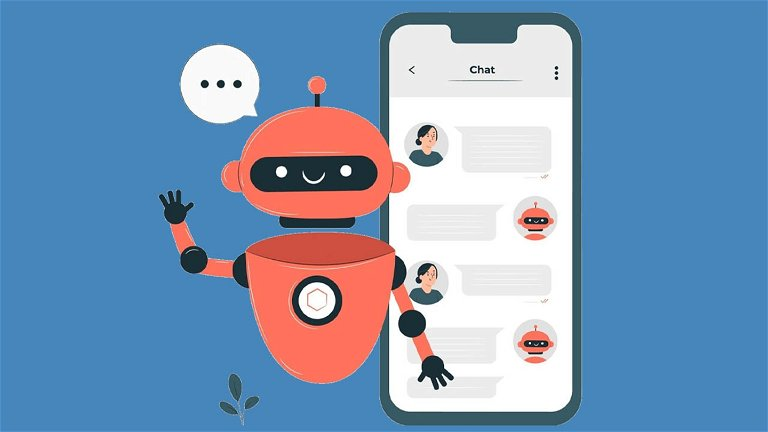
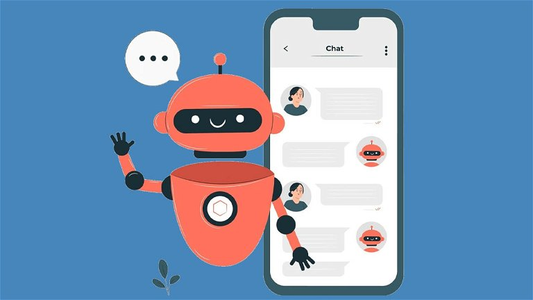

Chatbots AI en la Tecnología Moderna
Descubre cómo los chatbots AI están revolucionando la interacción en línea y facilitando la comunicación en diversos sectores industriales.
Portal de Pruebas
Descubre cómo los chatbots AI están revolucionando la interacción en línea y facilitando la comunicación en diversos sectores industriales.
Mantente actualizado sobre los últimos avances en la implementación de chatbots AI. Explora casos de uso innovadores y ejemplos prácticos.